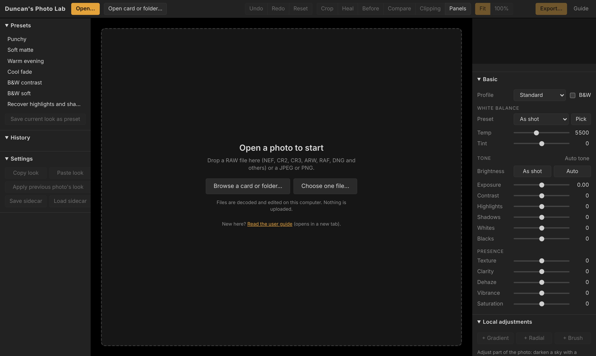
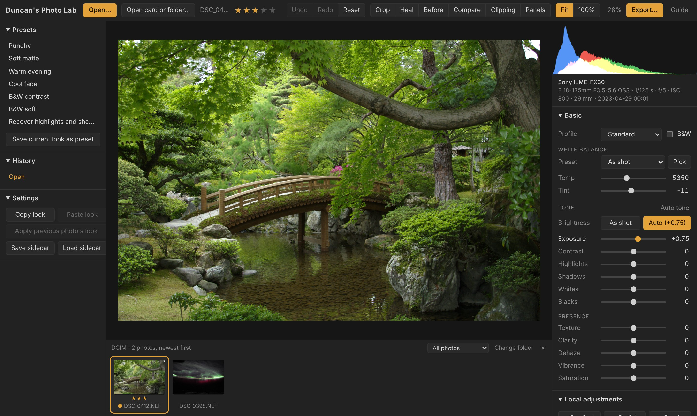
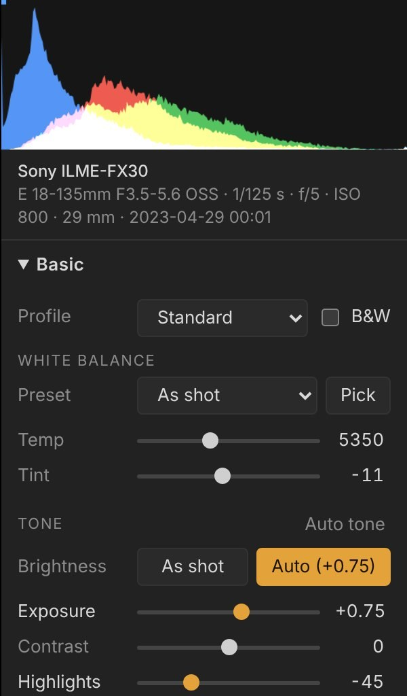
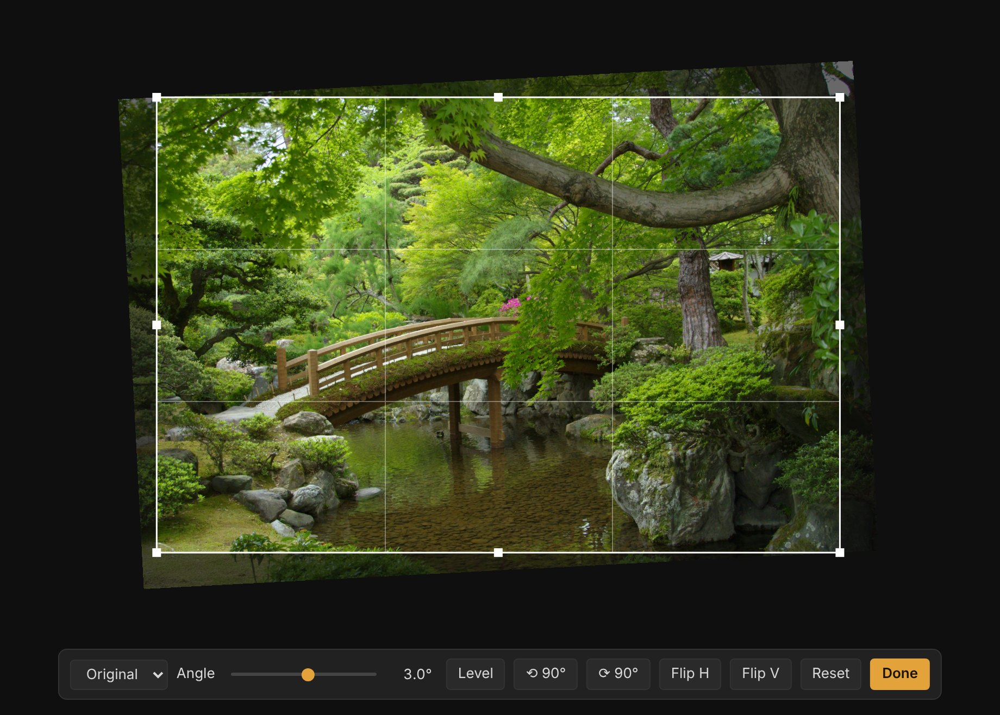
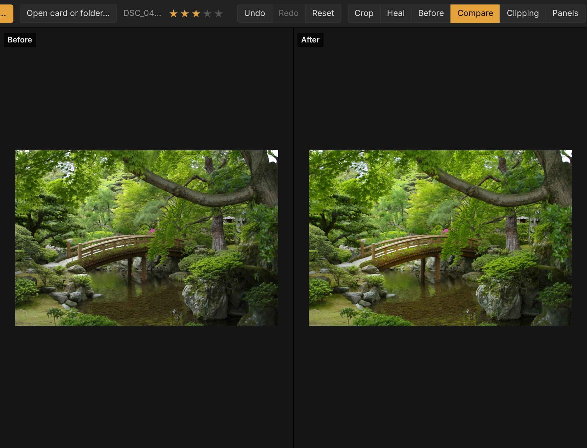
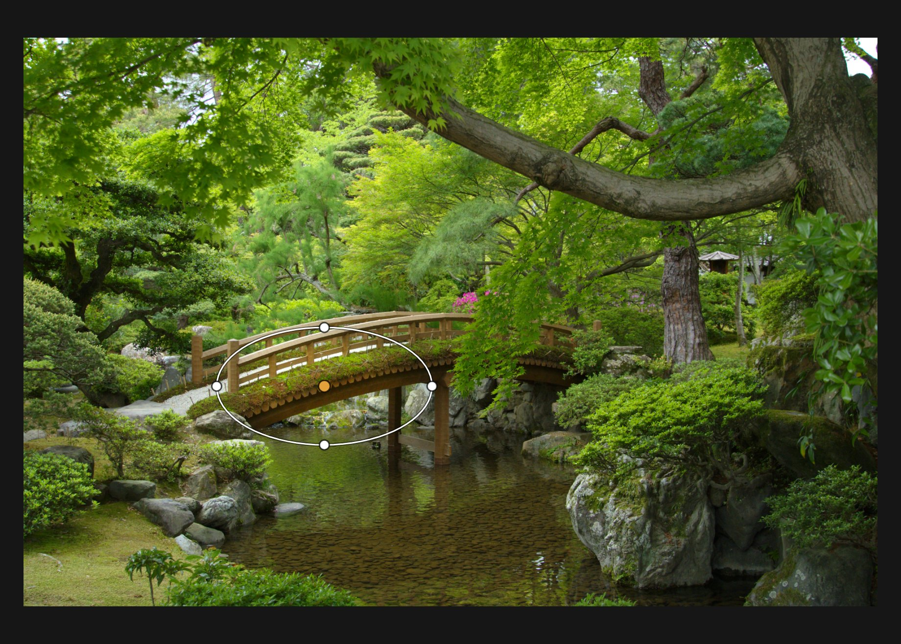
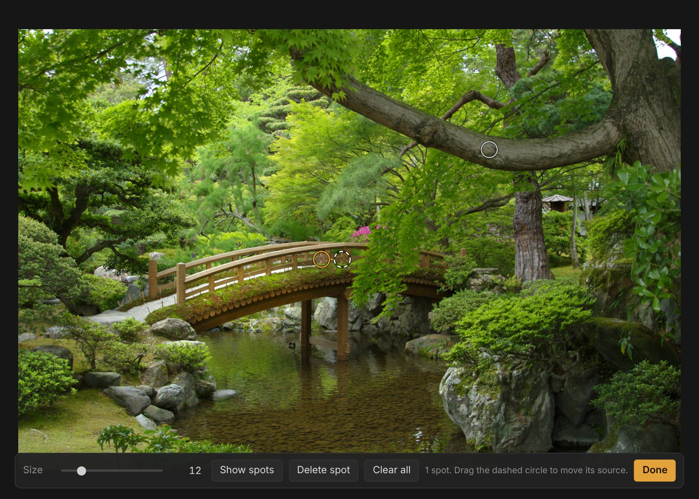
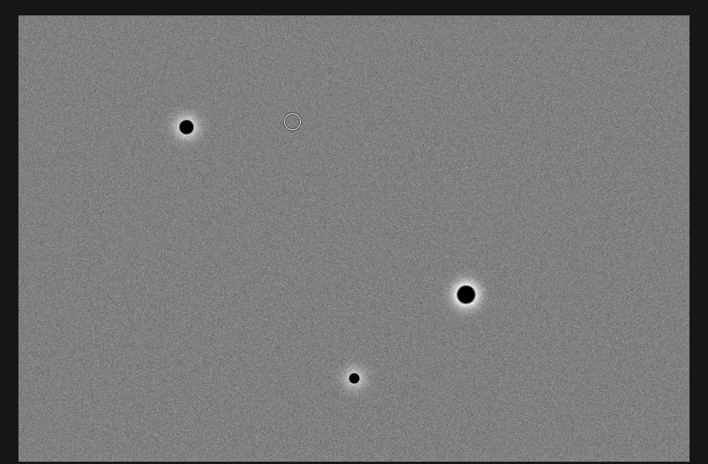
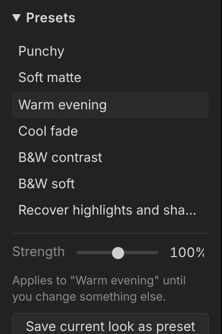
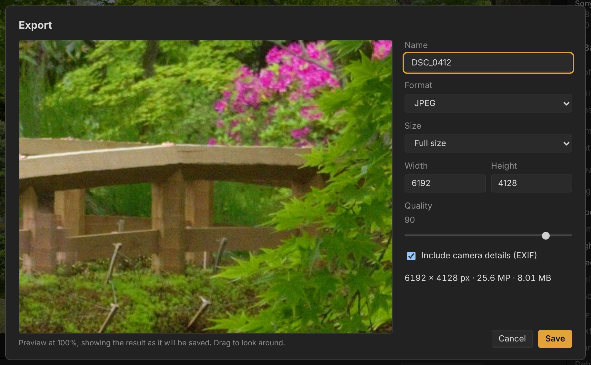

Your photos stay on your computer. The app runs in your browser. Nothing is uploaded.
Your original file is never changed. Every adjustment can be undone, and the camera's file is left exactly as it was. You get a finished picture by exporting a copy.
It is made for RAW files. These are the unprocessed files a camera can record (NEF from Nikon, CR2 or CR3 from Canon, ARW from Sony, and others). They hold more detail than a JPEG, which is what makes the adjustments in this guide work well. JPEG and PNG files open too.
1 Getting started
2 The screen at a glance
3 Your first edit, in five steps
4 Crop, straighten and compare
5 Fixing part of a photo
6 Working through a card of photos
7 Saving your finished photo
8 Where your work is kept, shortcuts and problems
1. Getting started
Go to the address on the front page. There is nothing to download and no account to create.

The start screen. Drop a photo anywhere on it, or use one of the buttons.
Opening a photo
Browse a card or folder… is the best way to work from a camera card. Choose the card, or the folder your photos are in, and every photo appears as a strip of small pictures along the bottom. Click one to open it. The browser will ask permission to read the folder; that is normal.
Choose one file… opens a single photo from anywhere on your computer.
You can also drag a photo from a folder window and drop it onto the app.
A RAW file takes a few seconds to open, because the app is developing it from the sensor data. While you wait, it shows the small preview the camera stored in the file, so you can see straight away which photo it is. The colours shift slightly when the developed version takes over.
Optional: install it as an app
In Chrome, click the install icon at the right-hand end of the address bar (a small screen with a down arrow). The app then gets its own window and an entry in your Start menu, and you can open RAW files in it straight from a folder by right-clicking a file and choosing Open with. It still needs an internet connection to start, and it updates itself.
Next time. The app remembers the last folder you browsed. The start screen shows a button with its name, so getting back to your card is one click.
2. The screen at a glance

123456
1Top bar. Open photos, undo, the tools (Crop, Heal), ways of viewing, zoom, and Export. The stars next to the file name are the photo's rating. Guide, at the far right, opens this document.
2Left panel. Ready-made looks (Presets), the list of everything you have done (History), and buttons for copying a look between photos.
3Your photo. Scroll the mouse wheel to zoom, and drag to move around when zoomed in. Double-click to jump between the whole photo and full detail.
4Histogram. A graph of how much of the photo is dark (left) or bright (right). A pile against either edge means detail is being lost there.
5Adjustment panels. The sliders that change the photo. Click a heading such as Tone curve to open or close that group.
6Photo strip. The photos in the folder you opened, newest first. An amber dot marks ones you have already edited.
Two habits worth learning straight away. Double-click the name of any slider to put it back to where it started. And press Ctrl + Z to undo your last change, as many times as you like.
3. Your first edit, in five steps
Everything here is in the Basic panel at the top right. Work from the top down; that order suits most photos.
Check the brightness. When a RAW photo opens, the app brightens it automatically if it was taken a little dark. The Brightness buttons show this: Auto is the brightened version and As shot is exactly what the camera recorded. Fine-tune with the Exposure slider.
Fix the colour of the light. If the photo looks too orange or too blue, change the white balance. Try the Preset list (Auto, Daylight, Cloudy and so on), or click Pick and then click something in the photo that should be plain grey or white. Temp moves between blue and orange; Tint between green and pink.
Balance light and dark.Highlights to the left brings back detail in bright areas such as sky. Shadows to the right opens up dark areas. Contrast adds or removes punch. Whites and Blacks set the very brightest and darkest points.
Add some life.Vibrance strengthens muted colours without overdoing ones that are already strong, so it is the safer choice. Saturation strengthens everything equally. Texture brings out fine detail such as bark, stone and fabric; to the left it softens it, which flatters skin. Clarity adds a bolder, punchier look.
Look at what you have done. Press \ to flip between the original and your version, then go on to export (section 7).

The Basic panel. Sliders you have moved turn amber.
In a hurry? Click a preset in the left panel for a finished look in one go. A Strength slider appears under the list: drag it left if the preset is too strong, or right to push it further. Or click Auto tone beside the Tone heading to let the app set exposure, whites and blacks for you. Both are starting points you can adjust.
The other panels, when you want them
Tone curve
Finer control of brightness. Click the line to add a point and drag it up to brighten or down to darken that part of the range.
Colour mixer
Change one colour at a time: make the blues deeper, the greens less yellow, and so on. With B&W ticked, it sets how light or dark each colour appears.
Colour grading
Add a colour tint to the shadows and a different one to the highlights, for a warm or cool mood.
Detail
Sharpening and noise reduction. Zoom to 100% (press Z) to judge these properly.
Effects
Darken or lighten the corners (vignette) and add film-like grain.
Lens corrections
Removes the slight bending and corner darkening a lens adds. Applied automatically when the app recognises the lens.
4. Crop, straighten and compare
Crop and straighten
Click Crop in the top bar, or press R.
Change the frame by dragging its corners or edges. Drag inside it to move it.
Keep a shape by choosing one from the list at the left of the bar, such as 1 : 1 for a square or 16 : 9 for a widescreen.
Straighten a tilted photo by clicking Level and then dragging a line along the horizon, or along something that should be upright such as the edge of a building. The photo turns to match. You can also use the Angle slider.
Turn or mirror the photo with the 90° and Flip buttons.

Crop mode. The bright area is what will be kept.
Click Done or press Enter when you are happy. You can come back and change the crop at any time; nothing is thrown away.
Checking your work
Before (\) shows the photo as it was, until you press it again.
Compare (Y) shows original and edit side by side. Zooming moves both together.
Clipping (J) paints pure white areas red and pure black areas blue, so you can see where detail has been lost.
Panels (Tab) hides the side panels to give the photo more room.
History, in the left panel, lists every step. Click any line to go back to that point.
Reset returns the photo to how it first opened.

Compare: before on the left, after on the right.
5. Fixing part of a photo
The sliders in section 3 change the whole photo. These two tools change only part of it.
Local adjustments: brighten, darken or recolour one area
Open the Local adjustments panel and choose the shape that fits what you want to change.
+ Gradient for a sky or foreground. Drag across the photo: the change is strongest where you start and fades out to where you let go.
+ Radial for a face or a single object. Drag to draw an oval, then use its handles to resize it. Tick Invert to affect everything outside it.
+ Brush for an irregular shape. Paint over the area. [ and ] change the brush size, and Erase removes paint.

A radial adjustment brightening the bridge. The oval marks the area.
Then move the sliders that appear underneath. They affect only that area. Tick Show mask overlay to see the area in red.
Heal: remove spots and blemishes
Click Heal in the top bar, or press H. It is made for dust spots in a sky and small marks.
Click the spot. The app covers it with a clean patch copied from nearby.
Make the circle slightly larger than the spot, using the Size slider or [ and ].
If the patch looks wrong, drag the dashed circle to somewhere better. That is where it copies from.
Remove a fix by clicking it and pressing Delete.

The solid circle is the fix; the dashed circle is where it copies from.
Finding faint dust
Dust on the camera's sensor shows as soft grey smudges, usually in the sky, and is easy to miss until a photo is printed or shared. Click Show spots in the Heal bar, or press S. The photo turns grey and anything that differs from its surroundings stands out as a dark or light dot.
Click each dot to fix it, then click Show spots again to check the result in colour. It works best on smooth areas such as sky; in busy areas such as leaves, everything stands out.

Show spots: three dust marks that were barely visible in the sky.
6. Working through a card of photos
After a day's shooting you usually want to find the good ones first, then edit only those. The photo strip and star ratings are for that.
Open the card with Open card or folder…. The newest photos are at the left of the strip.
Go through them with the ← and → keys.
Rate the ones worth keeping by pressing 1 to 5. Press 0 to clear a rating. The stars appear in the top bar and under the small picture in the strip.
Show only your picks. Use the list at the right of the strip (it says All photos) to show, for example, three stars and above.
Edit the first one.
Reuse the edit on similar photos. Open the next photo taken in the same light and click Apply previous photo's look in the left panel. The adjustments carry over; crops and spot fixes do not, because those belong to one photo.
Other ways to reuse a look
Copy look and Paste look do the same thing between any two photos, not only the last one.
Save current look as preset keeps a look under a name of your choosing. It then appears in the Presets list for any photo.
Presets, built in or your own, apply a whole look in one click. The Strength slider that appears under the list sets how much of it you get, from none to double.

A preset applied, with its Strength slider.
Working straight from the card? That is fine, but export the photos you want before you format the card. Your edits are remembered against each photo, and once the photo is gone there is nothing to apply them to.
7. Saving your finished photo
Click Export… at the right of the top bar, or press Ctrl + E. This makes a new file. Your original is not touched.

The Export window. The picture on the left shows the real result at full detail; drag it to look around.
Name
What the new file will be called.
Format
JPEG is the normal choice for sharing, printing and websites. PNG and WebP are alternatives. TIFF is a very large, top-quality file for carrying on in another editing program.
Size
Full size keeps every pixel. Smaller sizes suit email and the web: 2048 pixels on the long edge is a good general choice for sharing.
Quality
Higher looks better and makes a bigger file. 85 to 92 is right for most uses. The file size shown underneath updates as you move it, and the preview shows whether a lower setting is visibly worse.
Camera details
Stores the camera, lens and settings inside the file. Untick it if you would rather not share those.
Click Save and choose where to put the file. The app remembers your choices for next time.
8. Where your work is kept, shortcuts and problems
Where your work is kept
Edits, ratings and presets are saved automatically in the browser on this computer. Reopen a photo and it comes back as you left it.
They do not move with you. A different computer or a different browser will not have them, and clearing the browser's stored data removes them.
To keep an edit safely, click Save sidecar in the left panel. That saves a small file holding every setting, which Load sidecar can bring back later, on any computer. Or simply export the finished photo.
Keyboard shortcuts
Ctrl + Z
Undo (add Shift to redo)
Ctrl + O
Open a photo
Ctrl + E
Export
←→
Previous or next photo
0 to 5
Star rating
\
Before and after
Y
Compare side by side
Z
Whole photo or 100%
F
Fit the photo to the window
R
Crop
H
Heal (then S shows spots)
W
White balance picker
J
Show lost highlights and shadows
Tab
Hide or show the side panels
Enter or Esc
Finish the current tool
If something goes wrong
The photo will not open. Check it is a RAW file from a camera, or a JPEG or PNG. A message at the top of the photo area says what went wrong.
"Open card or folder" is missing. That feature needs Chrome or Edge. Other browsers can still open one file at a time.
The card's photos do not appear. Make sure the card is in the reader, then choose Change folder in the strip and pick it again.
The photo looks too bright or too dark when it opens. Click As shot or Auto under Tone, then adjust Exposure.
I have made a mess of it. Press Ctrl + Z to step back, click an earlier line in History, or click Reset to start again. Your original file is always safe.
The app looks out of date. Press Ctrl + F5 to load the newest version.
Sliders feel slow. Close other heavy tabs. The app uses your computer's graphics hardware, so an older machine will be slower with large photos.